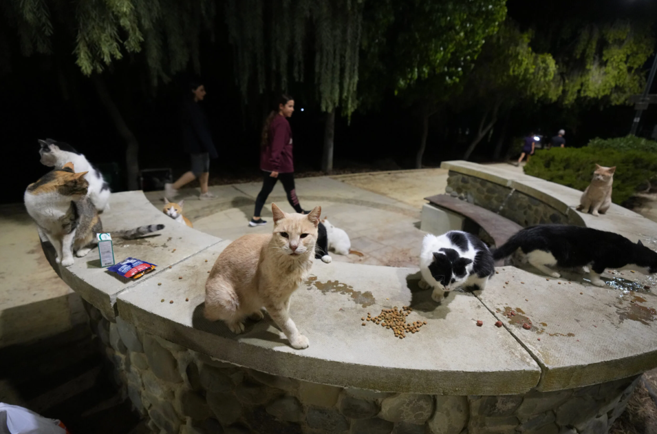

Decides que Mike se enfrente a los gatos.
Mike, todavía nervioso, intenta intimidar a los gatos, quienes son tomados por sorpresa. Mike les gruñe y saca sus garras para defenderse.
Los gatos, al ver esto, deciden mejor no enfrentarlo. Después de unos segundos, se tranquilizan todos, incluyendo a Mike.
Mike se da cuenta de que los gatos no son tan malos como pensaba. Ellos únicamente pensaban que Mike era una amenaza, por lo que buscaban defender su territorio.
Los gatos quieren saber por qué Mike ha llegado al parque. Él les explica que ha salido corriendo de su colonia, y necesita un lugar para poder pasar la noche.
Esto les da una sensación de empatía hacia Mike, pues ellos también han tenido que sobrevivir en las calles, y pasan las noches en el parque para protegerse de los peligros de la ciudad.
Los gatos ofrecen a Mike a quedarse con ellos en el parque, y Mike acepta la invitación.
En el transcurso de unos días, Mike se va adaptando a su nueva vida con los gatos callejeros, quienes lo consideran parte de su familia.